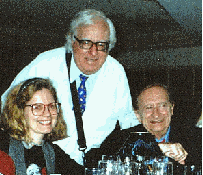

|
Ricia Mainhardt

Ricia, Ray Bradbury and Robert Bloch |
Ricia Mainhardt has represented authors from her offices in New York
for more than twenty years. In addition to her regular clients, she
enthusiastically supports talented, unpublished authors. After a long
hiatus recovering from a car accident, Ricia is back, looking for the next
publishing star and is excited about her work and her writers. |
Originally from Wisconsin, Ricia has an undergraduate degree from
Northwestern University and a graduate degree from Washington University in
St. Louis in auditory electrophysiology. After spending time in her chosen
specialty as well as peddling rags as a sales representative for the
clothing industry, Ricia discovered a field that synthesized her love for
the written word and for people.
A student, fan, and friend of greats in the science fiction field such
as Robert Heinlein, Ray Bradbury, and Harlan Ellison, she achieved quick
success in that publishing field and opened her agency in 1987. Soon
afterwards, she branched out into other areas, most notably romance and new
age, and has developed numerous writers in other genres.
Ricia jointly edited two anthologies, a collection of superhero stories with John Varley and a tribute book to Robert Bloch with Richard Matheson.
Her client list has included Ray Garton (Simon and
Schuster, among others) in horror, children's fiction, and
novelizations, Michael A. Stackpole (Bantam, HarperCollins)
in science fiction and fantasy, Richard Lee Byers (Minstrel
[S&S]) in fantasy, Jim Butcher (Roc) in "gumshoe
fantasy," and Janeen O'Kerry (Dorchester) in historical
and time-travel romance.
Charla Mustard-Foote
VP West Coast Operations, RMA
Charla Mustard-Foote
has 25 years' experience writing and editing nonfiction (technical and
political manuscripts) and 5 years' experience with RMA as a manuscript reader. She has been a valued coach and mentor for selected science fiction and romance writers.
As an undergraduate, Charla studied at the University of Iowa Writers' Workshop and
received a B.S. in Journalism from U of I with a minor in
Black Studies. Charla is also an associate member of Romance Writers of America.
Main | Authors | Submit | Contact
Copyright ©1998-2008 RMA™. All rights
reserved.
Graphics by Kristen
|